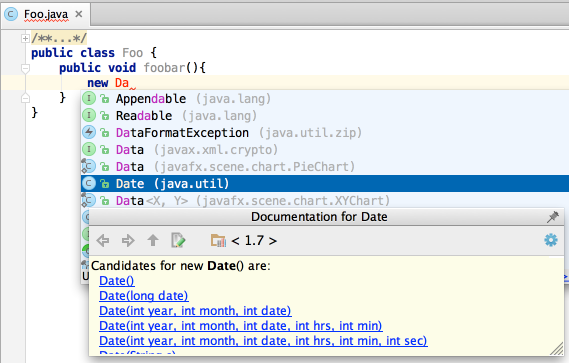

When in a Code Completion lookup, press &shortcut:QuickJavaDoc; to show documentation for a lookup item, including class constructors.
So doing, if a class has more than one constructor, the links are shown:

Following a link shows documentation for the selected constructor.